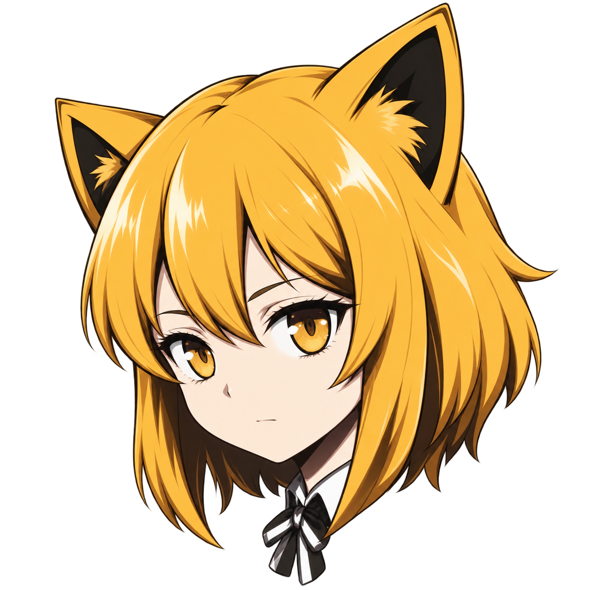
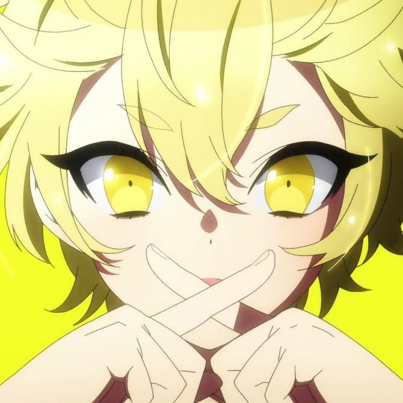
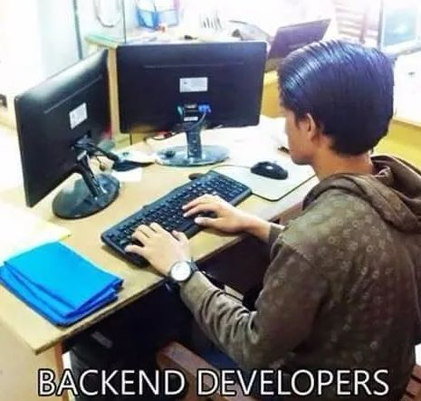
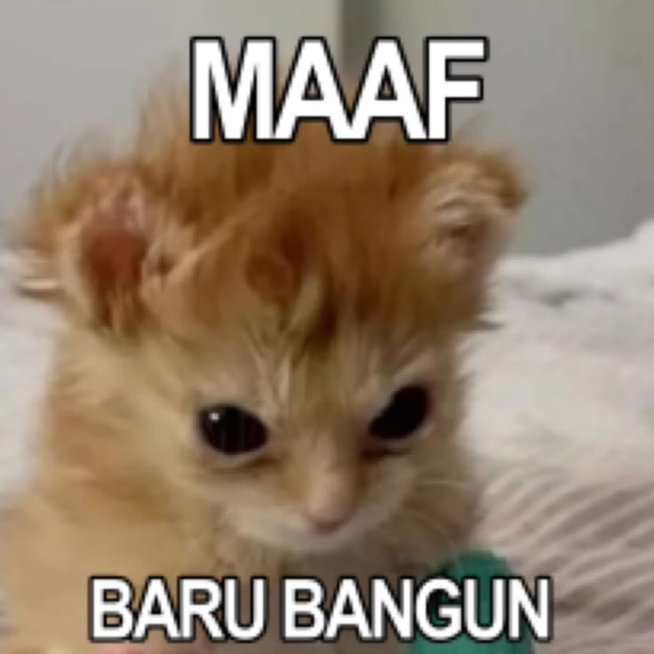
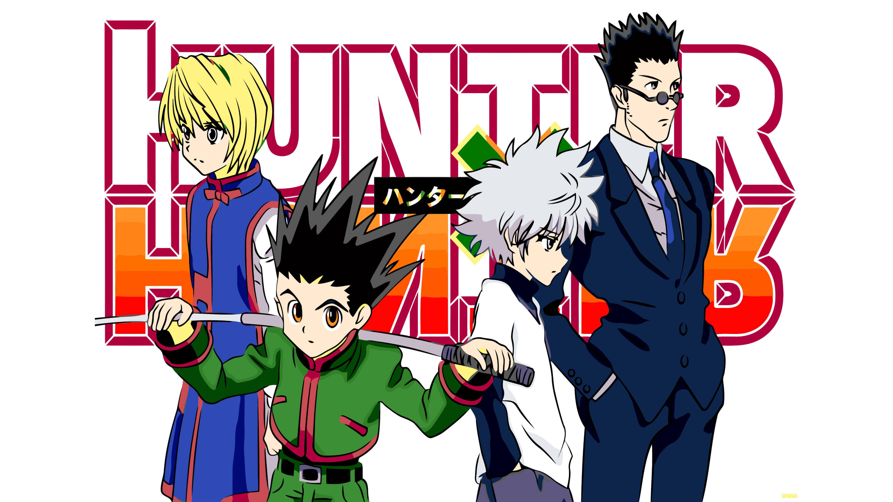
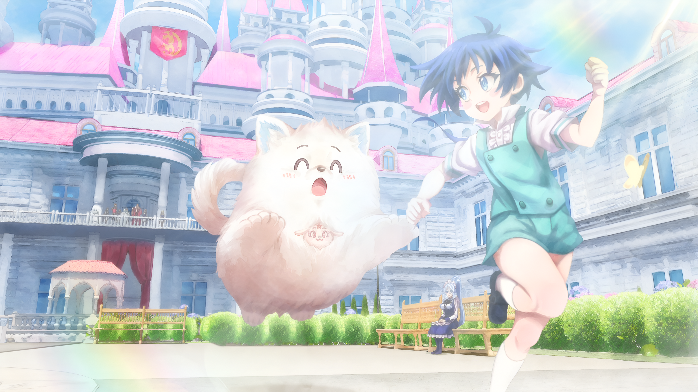
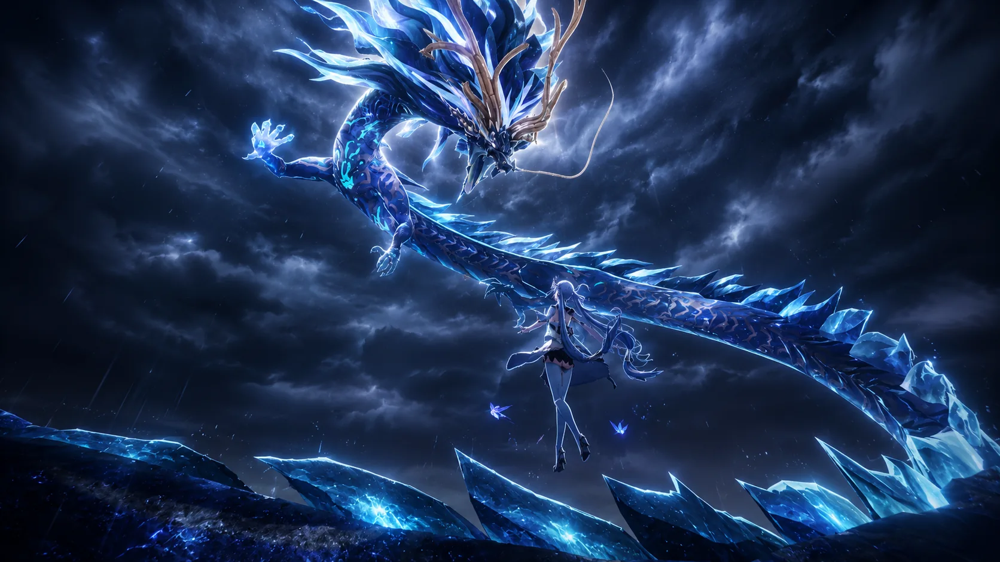
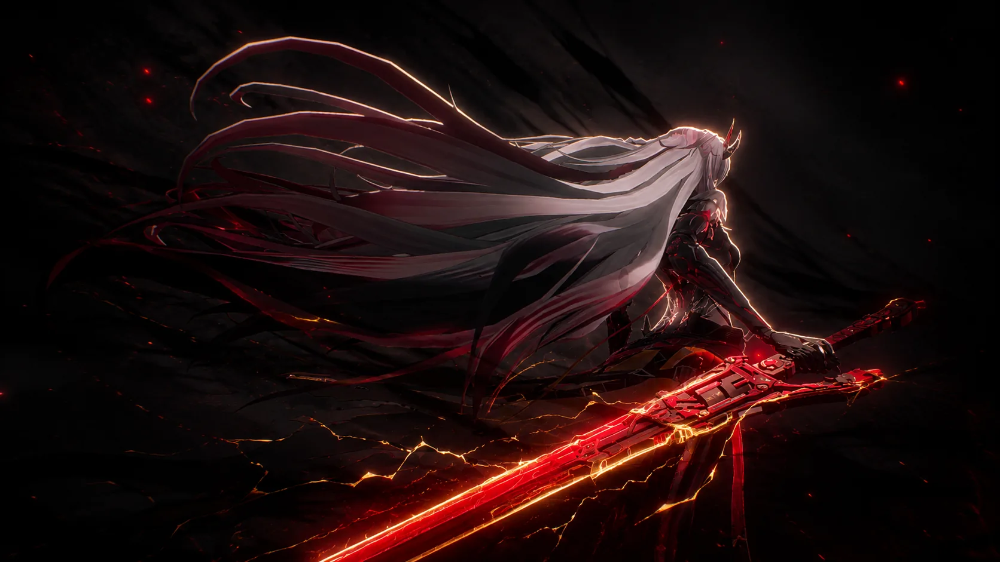
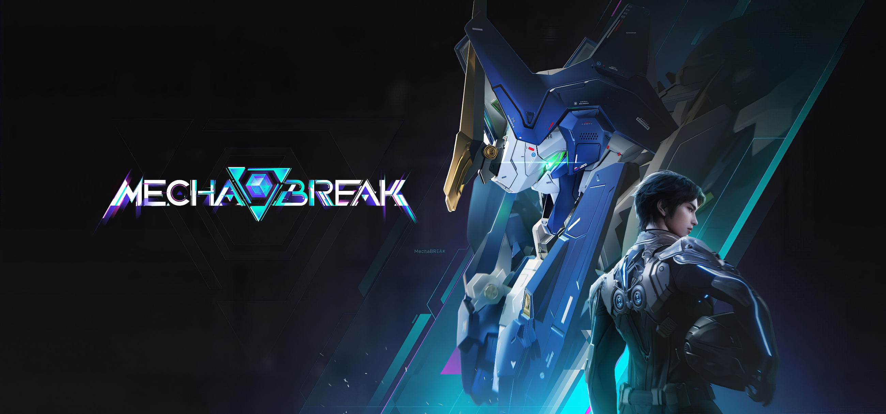

[ // DESIGN · DEVELOP · EXPLORE ]
BUILDING
IDEAS LIKE
A MAKER .
Mahasiswa Teknik Informatika. Suka bikin ekperimen yang berakhir wacana

Anime
[01 // TENTANG]
A STUDENT.
A BUILDER.
A LIFELONG LEARNER.
Mahasiswa Teknik Informatika yang suka ber-eksperimen terhadap sesuatu yang tidak diketahui
Lebih tentang aku
-
EXPLORER
Selalu penasaran, selalu belajar hal baru satu konsep kecil setiap malam.
-
BUILDER
Dari sebuah pikiran menjadi sebuah eksprimen
-
DESIGN
Percaya bahwa pikiran yang tenang bisa menghasilkan design yang indah
[02 // PROJEK]
MY JOURNEY.
SO FAR.
Kumpulan eksperimen dan karya
[03 // PERKAKAS]
TOOLS
IN MY Home.
Bahasa dan Aplikasi yang Saya Pakai
LANGUAGES
- HTML
- CSS
- JavaScript
- PHP
- RUST
- [ + MENYUSUL ]
WEB
- Vanilla JS
- Anime.js
- Git
- Server
- [ + MENYUSUL ]
TOOLS & LAINNYA
- VS Code
- Android Studio
- [ + MENYUSUL ]

"SIDE QUESTS"
[04 // FAVORITES]
THE REPEAT.
LIST.
Tiga anime dan tiga game yang kuputar berulang — bukan favorit orang lain, favorit aku.
// ANIME
-

Knight & Magic
KNIGHT & MAGIC -

HUNTER × HUNTER
HUNTER × HUNTER -

[ Tensei shitara Dainana Ouji Datta node, Kimama ni Majutsu wo Kiwamemasu ]
THE 7TH PRINCE
// GAMES
-

WUTHERING WAVES
WUTHERING WAVES -

PUNISHING: GRAY RAVEN
PUNISHING: GRAY RAVEN -

MECHA BREAK
MECHA BREAK
[05 // GET IN TOUCH]
OPEN CHANNEL — PILIH FREKUENSI
GitHub@NeoNishikawa
Email[ menyusul — Neo isi ]
Instagram[ menyusul — Neo isi ]
Youtube[ menyusul — Neo isi ]